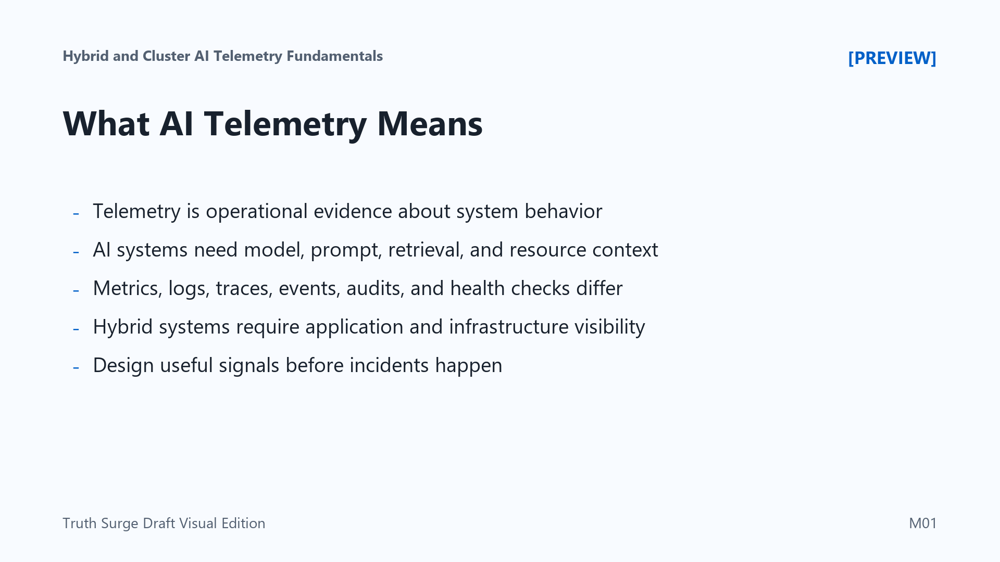

What AI Telemetry Means
Connecting to LMS... Progress: in progress

Narration
Telemetry is the operational evidence that shows what a system is doing, how well it is performing, and where it may be failing. In ordinary services, telemetry often means metrics, logs, traces, events, audit records, and health checks. Those signals help teams understand latency, errors, throughput, resource use, and important state changes.
AI systems need those same signals, but they also need AI-specific context. A production inference path may depend on a model version, prompt template, retrieval index, data pipeline, accelerator, queue, cache, model gateway, and policy decision. If telemetry only says that an API was slow, the team still needs to know whether the delay came from model execution, retrieval, scheduling, storage, network, or another dependency.
Hybrid and clustered environments make this more important. A single request can cross application code, orchestration layers, GPU nodes, managed services, private networks, and external APIs. Each layer can be healthy by itself while the combined workflow still fails for users. Useful telemetry connects application behavior to infrastructure behavior so engineering, operations, security, and governance teams can reason from shared evidence.
Good telemetry is designed before incidents happen. It is not a pile of everything a platform could emit. It is a set of signals chosen because they answer operational questions: what happened, where did it happen, who or what was involved, how severe was it, and what should the team do next?